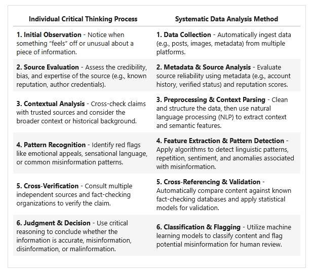
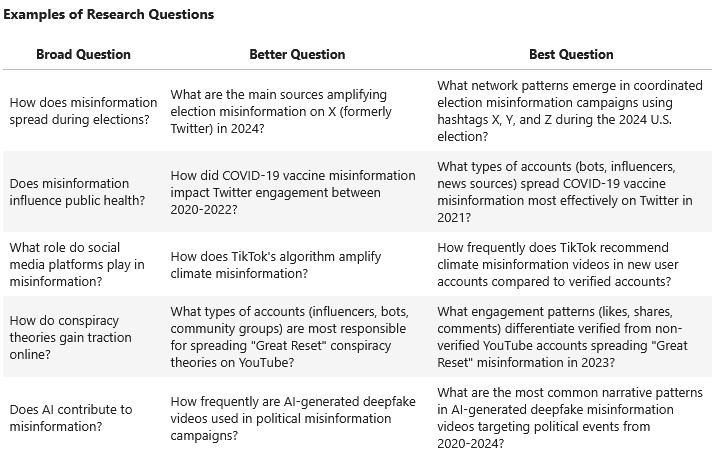

📚 Defining the Research Question & Identifying Credible Data
Introduction
In the fight against MDM, data plays a crucial role. However, before we can analyze data, we must ensure we are asking the right questions and working with credible, high-quality sources. Without a well-defined research question and systematically verified data, even the most sophisticated analysis will be flawed.
This lesson will guide you through two critical steps:
🔹 Shifting from Individual Analysis to Systematic Methods
Traditionally, misinformation detection has relied on individual critical thinking—a process that involves assessing credibility, checking sources, and verifying facts manually. However, the sheer volume and speed of misinformation spread online make manual analysis insufficient at scale.
To tackle this, we shift from an individual process to learning about the systematic, data-driven approach using computational tools.

Optional Reading: “Fact-checking” fact checkers: A data-driven approach
Optional reading question: What are the notable differences in the types of claims selected for fact-checking and the focus areas among the organizations studied?
Why This Matters
Misinformation thrives on distorted or misleading data. If we don’t scrutinize our sources, we risk amplifying false narratives rather than countering them. This is especially critical in today’s digital age, where data can be manipulated to serve political, financial, or ideological agendas.
By the end of this lesson, you will have:
✅ A well-defined research question that will serve as the foundation for your final project.
✅ A list of relevant and credible datasets to explore in upcoming lessons.
✅ A critical approach to assessing data reliability, helping you avoid biased or manipulated sources.
Let’s get started! 🚀
🔹 Understanding the Research Question
Why a Strong Research Question Matters
A well-defined research question is the foundation of any data-driven investigation. It determines:
What type of data you need.
How you will analyze the data.
What insights or conclusions you can draw.
In MDM research, vague or overly broad questions can lead to weak, inconclusive findings. Instead, we aim to ask precise, data-driven questions that can be answered through structured analysis.
What Makes a Good Research Question?
A strong research question should be:

⚠ Common Pitfalls in Research Questions
🧠 Mental Exercise: Refining a Research Question
Choose one of the following broad research questions and refine it into a better and best version using the examples above as a guide.
How do fake news websites operate?
Does misinformation impact elections?
What is the role of AI in misinformation?
💡 Hint: In the next graded assignment, you will define a research question related to one of the MDM narratives you analyzed in Assignment 1. Keep this in mind as you refine your question—choosing a topic you’re already familiar with will help you build a stronger foundation for your research.
🧠 Quick Review Questions
Why is it important to fully understand the misinformation problem before collecting data?
It increases the likelihood of data overload.
It ensures the research remains focused, actionable, and impactful.
It simplifies data collection regardless of quality.
It guarantees all sources are free of bias.
Which of the following is NOT a risk of misidentifying the misinformation problem?
Data overload
Misinterpretation of findings
Ineffective solutions
Clear research direction
A strong research question should be all of the following EXCEPT:
Specific
Measurable
Actionable
Vague
Which key question should be considered when defining the misinformation problem?
What is our total research budget?
Who is spreading the misinformation?
How many researchers are on the team?
Which software will be used for analysis?
Which of the following is the BEST example of a structured, data-driven research question?
Why do people believe COVID-19 vaccine misinformation?
How does misinformation affect people’s health choices?
What is the engagement difference between COVID-19 vaccine misinformation tweets and their fact-checked corrections?
Why are people hesitant to get vaccinated?
Which of these is a weak research question for misinformation analysis?
Which Twitter accounts were most active in spreading COVID-19 vaccine misinformation between March 2020 and March 2022?
What percentage of misinformation engagement comes from bot accounts vs. real users?
Why do people share false information?
How does engagement with misinformation compare to engagement with fact-checks?
If you want to study how bots amplify COVID-19 vaccine misinformation, which research question is most appropriate?
What are the most common emotional triggers used in vaccine misinformation?
What percentage of accounts spreading vaccine misinformation on Twitter are bots?
What are the political beliefs of people who share misinformation?
How does vaccine misinformation compare between Twitter and Facebook?
Which of the following broad research questions has been correctly refined into a data-driven research question?
Why do people believe misinformation? → How does misinformation affect people’s emotions?
How does misinformation spread online? → Which Twitter accounts were most active in sharing COVID-19 vaccine misinformation between Mar and Apr?
Who spreads misinformation? → What makes someone share misinformation?
How effective is fact-checking? → Why do people ignore fact-checks?
✅ Answers:
It ensures the research remains focused, actionable, and impactful.
Clear research direction
Vague
Who is spreading the misinformation?
What is the engagement difference between COVID-19 vaccine misinformation tweets and their fact-checked corrections?
Why do people share false information?
What percentage of accounts spreading vaccine misinformation on Twitter are bots?
How does misinformation spread online? → Which Twitter accounts were most active in sharing COVID-19 vaccine misinformation between Mar and Apr?
🔹 Data Identification
Why Data Identification Matters Once you have a clear research question, the next step is determining what data is needed to answer it. Without the right data, even the most well-structured research question will be impossible to answer effectively.
In MDM analysis, the type of data you collect will shape your conclusions. Poor data selection can lead to biased findings, misleading insights, or incomplete analysis.
Common Data Sources for MDM Research
MDM analysis often requires a mix of structured and unstructured data from both primary and secondary sources. Below are key data sources commonly used in misinformation research:
Source |
Type |
Data Format |
Use Case |
|---|---|---|---|
Twitter/X API |
Primary |
Structured (engagement metrics) & Unstructured (tweet text) |
Collect tweets, engagement metrics, user interactions. |
Facebook/Meta Crowdtangle |
Primary |
Structured & Unstructured |
Track misinformation trends across Facebook & Instagram. |
Fact-Checking Organizations (e.g., Poynter, Snopes, PolitiFact) |
Secondary |
Structured (fact-check records) |
Validate and categorize misinformation claims. |
Google Fact Check API |
Secondary |
Structured |
Retrieve fact-checking results for claims found online. |
News Archives (e.g., GDELT, Media Bias/Fact Check) |
Secondary |
Unstructured |
Analyze news reporting patterns and bias in misinformation. |
Botometer API |
Secondary |
Structured |
Detect bot activity on social media platforms. |
Surveys & Interviews |
Primary |
Structured & Unstructured |
Gather firsthand data on public beliefs and misinformation impact. |
💡 Reminder:
Structured data (e.g., engagement metrics, bot scores) is easier to analyze quantitatively.
Unstructured data (e.g., social media posts, news articles) requires text processing techniques.
Primary sources are collected firsthand, while secondary sources are pre-existing datasets.
⚠️Challenges in Data Collection
1️⃣ Accessibility & API Restrictions
Some platforms (e.g., Facebook, Instagram) limit public API access, making direct misinformation collection difficult.
Data licensing may prevent certain datasets from being freely used.
Some sources require institutional approval (e.g., X’s Academic API).
Data availability varies by region—some datasets may be inaccessible in certain countries due to government regulations.
API limitations (e.g., rate limits, paywalls) can restrict the volume of data that can be collected in a given timeframe.
🔹 Solutions:
✅ Use alternative data sources (e.g., Reddit API is more open than Facebook).
✅ Partner with research institutions for data-sharing agreements.
✅ Apply for academic API access where possible (e.g., Twitter’s Academic Research track).
✅ Consider ethical web scraping techniques while ensuring compliance with platform terms of service.
✅ Use open-source datasets compiled by misinformation research initiatives.
2️⃣ Ethics & Privacy Concerns
User privacy – Collecting personally identifiable information (PII) without consent is unethical and, in some cases, illegal (e.g., GDPR, CCPA).
Risk of amplification – Sharing misinformation data without context may unintentionally spread false narratives further.
Ethical concerns in web scraping – Automated collection of social media data may violate terms of service and risk exposing user data.
Misinformation impact – Storing and analyzing sensitive topics (e.g., public health misinformation) requires responsible handling to avoid contributing to harm.
🔹 Solutions:
✅ Anonymize data – Remove personal identifiers before analysis.
✅ Focus on aggregate insights, not individual user data.
✅ Clearly document data collection methods to ensure ethical transparency.
✅ Obtain proper consent if using survey-based misinformation research.
✅ Apply for Institutional Review Board (IRB) approval when working with human-related misinformation data.
✅ Store datasets securely and limit access to authorized researchers only.
3️⃣ Data Noise & Bias
Not all data is relevant or high-quality – Social media posts may contain spam, satire, or unrelated content.
Algorithmic bias – Platform engagement algorithms may skew which misinformation spreads the most.
Selection bias – Certain datasets may overrepresent specific demographics, political affiliations, or geographic regions.
Missing context – Misinformation posts may not always be labeled as such, making classification difficult.
Fact-checking lag – Real-time misinformation research may struggle with delayed fact-checking verification.
🔹 Solutions:
✅ Preprocess & clean data (we’ll cover this in Lesson 5).
✅ Cross-check multiple sources to reduce platform bias.
✅ Use diverse datasets from multiple platforms to improve representativeness.
✅ Apply machine learning techniques to filter out spam, satire, and irrelevant content.
✅ Validate misinformation classifications by cross-referencing fact-checking databases.
✅ Adjust for algorithmic bias by examining platform policies and content curation practices.
Data Identification in Practice
💭 Imagine you are researching how TikTok’s algorithm amplifies climate misinformation.
Let’s break down how we would approach this study.
Step 1: Identify the Types of Data Needed (MDM Data Types)
To analyze how misinformation is amplified, we need a mix of structured and unstructured data:
Step 2: Identify the Best Data Sources
To collect relevant data, we would use a mix of primary and secondary sources:
Source |
Data Type |
Use Case |
|---|---|---|
TikTok API (if available) |
Structured & Unstructured |
Extract metadata, engagement metrics, and video trends. |
CrowdTangle (Meta) |
Structured & Unstructured |
Track misinformation trends across Facebook & Instagram. |
Google Fact Check API |
Structured |
Retrieve fact-checking results for misinformation claims. |
Manually Collected Data |
Unstructured |
Create fake profiles and test algorithmic recommendations. |
Misinformation Databases (e.g., IFCN, GDELT) |
Structured & Unstructured |
Compare known misinformation patterns with observed trends. |
Step 3: Consider Challenges in Data Collection & Analysis
Mental Exercise: Apply the Same Approach to a New Scenario
💭 Now it’s your turn!
Imagine you are researching how YouTube’s recommendation system influences political misinformation during elections.
🚀 Next Up: We’ll explore how to evaluate data credibility before using it in research.
🔹 Evaluating Data Credibility
Why Does Data Credibility Matter?
Not all data is reliable, unbiased, or trustworthy. In misinformation research, using flawed or manipulated data can lead to incorrect conclusions, reinforcing false narratives instead of debunking them.
Before using any dataset, we must evaluate its credibility based on source reliability, accuracy, bias, and manipulation risks.
CRAAP Test
Key Factors for Evaluating Data Credibility
When assessing a dataset, consider the following questions:
🛡️ Source Reliability
📌 Example: A dataset from the Pew Research Center or Google Fact Check API is generally more reliable than a **random spreadsheet from social media.*
📊 Data Accuracy & Completeness
📌 Example: A dataset of tweets labeled as misinformation should have timestamps, user details, and content context—not just a list of tweet IDs.
⚖️ Bias & Manipulation Risks
📌 Example: A dataset of news articles from only one political news source could introduce bias in misinformation classification.
🔄 Data Freshness & Context
📌 Example: COVID-19 misinformation datasets from 2020 may no longer reflect current misinformation tactics in 2024.
Evaluating Credibility in Practice: Case Study
Scenario: Misinformation in Election-Related Tweets
Imagine you find a dataset labeled “Election Misinformation Tweets (2024)” that claims to contain 100,000 tweets flagged as false information.
Before using this dataset, let’s apply our credibility checks:
Credibility Factor |
Evaluation |
Red Flags? |
|---|---|---|
Source Reliability |
Data collected from an unknown researcher on GitHub |
❌ No known credibility |
Accuracy & Completeness |
Only contains tweet IDs, no timestamps, user engagement, or fact-check labels |
❌ Missing critical context |
Bias & Manipulation |
No clear methodology on how tweets were classified as misinformation |
❌ Potential labeling bias |
Freshness & Context |
Data collected only during the first week of the election |
⚠️ May not represent full election cycle trends |
📌 Conclusion: This dataset lacks source transparency, completeness, and unbiased classification criteria—it should not be used without further validation.
🧠 Mental Exercise: Evaluating Data Credibility
💭 You are researching misinformation spread on Facebook about public health policies. You find a dataset labeled “Facebook Misinformation Posts (2023).”
Optional reading question: What are the potential long-term impacts of implementing credibility badges and social norms on social media platforms in terms of user behavior and platform culture?
🔹 When the Data Comes First
While defining a strong research question is an essential first step in most data-driven investigations, real-world research isn’t always so linear. In some cases, you may be given a dataset first and need to explore its structure, patterns, and limitations before determining what questions can reasonably be answered.
This data-first approach is common in misinformation research, where large-scale datasets (e.g., social media archives, news articles, or engagement metrics) may already exist, but the key insights hidden within them are not immediately clear. In such cases, exploratory data analysis (EDA) becomes crucial—it helps you uncover trends, anomalies, and relationships that can guide the formation of meaningful research questions.
For example, you might receive a dataset of flagged misinformation posts and, instead of starting with a predefined question, begin by asking:
✅ What patterns emerge in the data?
✅ Are there noticeable trends in misinformation spread (e.g., time of day, platform, topic focus)?
✅ What relationships exist between misinformation engagement and fact-checking responses?
This iterative process—where data informs the research question rather than the other way around—can be just as valuable as traditional hypothesis-driven approaches.
In Lesson 5, as we begin working with data hands-on, we’ll not only answer pre-defined research questions but also explore how to let the data guide the discovery of new insights. 🚀
🚀 Next Up: Now that we know how to find and evaluate credible data, we’ll move into Lesson 5: Hands-on Data Exploration & Cleaning in Python.